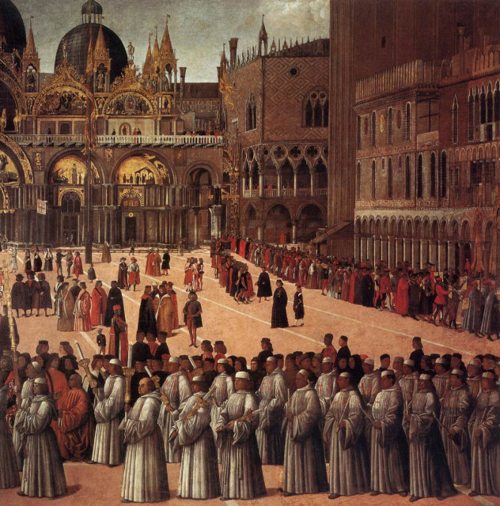
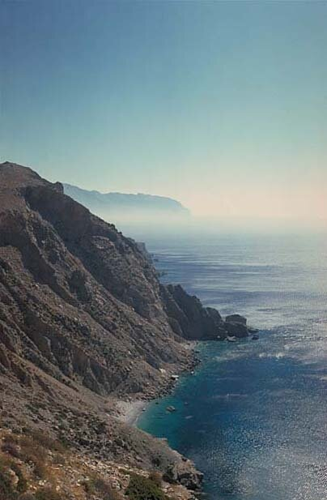
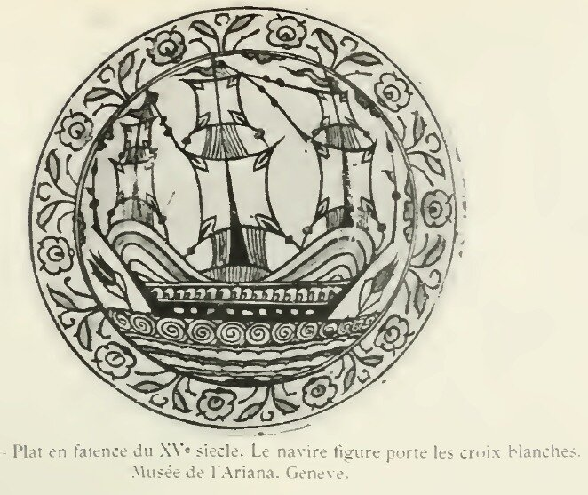
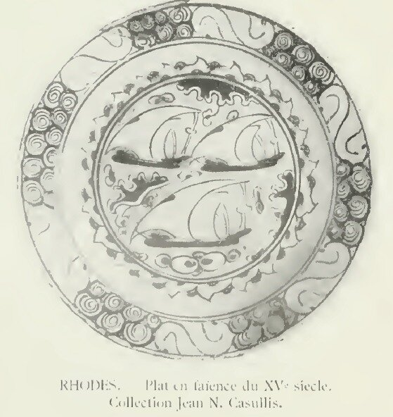
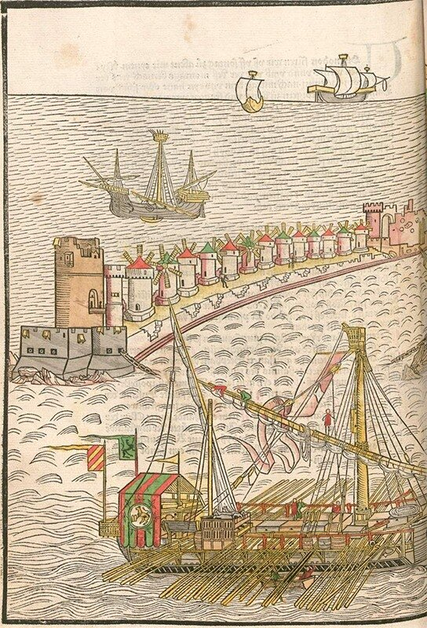
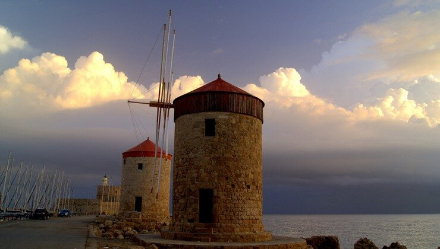

«И пусть распутные пьяницы, обжоры, пузогреи и всякая рвань придорожная останутся вместе с трусами; Бог желает испытать в месте омовения доблестных и здоровых, а другие пусть охраняют свои жилища и выдвигают всяческие объяснения, и потому я отсылаю их к их позору».
(Маркабрюн, трубадур)
За нас Христос, исполненный любови,
Погиб в земле, что туркам отдана.
Зальем поля потоком вражьей крови,
Иль наша честь навек посрамлена!
(Конан де Бетюи, пер. Е. Васильевой)
Итак, госпитальеры в начале XIV века начали обустраиваться но Родосе. Великий магистр ордена Фульк де Вилларе покинул своих собратьев и отправился улаживать политические вопросы к папе. Климент V в этом время плел сложные интриги для сохранения своих позиций в Восточном Средиземноморье. В 1307 году Климент отлучил от церкви византийского императора Андроника II, который отменил введенную его отцом Михаилом VIII церковную унию с католической церковью и продолжил политику по поддержанию византийско-монгольского альянса. Андроник неудачно вмешался в борьбу между Венецией и Генуей, что привело к усилению засилья венецианцев в империи. Стремясь дать отпор туркам, к этому времени захватившим почти всю Малую Азию, император нанял войско каталонцев во главе с Роже де Флором, которые после убийства их главнокомандующего в 1305 подняли мятеж, опустошили византийские владения, заняли Фессалию и ряд других византийских областей. Однако попытки папы погреть руки на борьбе Византии с Венецией и Каталонией не увенчались успехом.
В этой обстановке де Вилларе попытался добиться поддержки папы и короля Франции, обещая им организовать новый поход к святым местам. Однако, как заметил король Арагона Хайме II, истинная цель Великого магистра заключалась в получении поддержки для закрепления на Родосе. Папа, сославшись на пустую казну, денег не дал. Чтобы получить помощь от богатых итальянских городов-государств, следовало сделать выбор, чью сторону занять. С Венецией договориться не удалось. На прекрасной картине Джованни Беллини «Процессия на площади св.Марка в Венеции» среди множества служителей церкви можно видеть одинокую фигуру родосского рыцаря с восьмиконечным белым крестом на плаще в сопровождении пажа. Это одиночество и как бы изоляция от собратьев по вере точно подчеркивают характер отношений ордена со Светлейшей. Де Вилларе сделал выбор в пользу Генуи.
 |
| Процессия на площади св. Марка в Венеции (1494, фрагмент) (кликабельно) |
Пока де Вилларе искал помощи в Европе, турецкие эмиры Анатолийского побережья попытались отвоевать острова, захваченные иоаннитами. Но турки встретили ожесточенное сопротивление. Используя имеющиеся у родосских рыцарей две галеры, одну фусту, один галион (chutier) и две памфилы (F.Bustron, Chronique de l’île de Chypre, 141), госпитальеры встретили флот анатолийских эмиров у острова Амо́ргос. На помощь госпитальерам подоспели вернувшиеся на Родос вместе с Великим Магистром двадцать шесть галер, в основном генуэзских. На их борту находилось 200-300 новых рыцарей и три тысячи пехотинцев. В решающем сражении у Аморгоса турецкий флот был полностью уничтожен. (В качестве отступления хочется упомянуть снятый на этом острове замечательный фильм Люка Бессона о жизни ныряльщиков «Голубая бездна» (Le Grand Bleu) и блестящего актера Жана Рено. На фотографии видны неприступные берега этого острова, более характерные для северных морей, чем для Средиземноморья).

В 1320 г. родосский флот из 24 кораблей совместно с 11 генуэзскими галерами под общим командованием Альбера де Шварценбурга (Albert de Schwartzenbourg) одержал победу над турецким флотом у острова Хиос.
Если говорить о кораблях Родосских рыцарей этого времени, то конкретных данных о них не сохранилось. Придется опираться на сведения о галерах и «круглых кораблях» того времени у генуэзцев, венецианцев и Анжуйского королевства на Сицилии. О них мы поговорим в свое время. Сейчас просто приведем несколько конкретных изображений кораблей родосского флота. Мне пришлось побывать в свое время в замечательном музее керамики и стекла Ариана в Женеве. В его коллекции есть несколько фаянсовых тарелок, изображающих галеры госпитальеров. К сожалению, не удалось найти современных фотографий этих блюд, поэтому приведу пару изображений из старых книг:
 
Как складывалась оперативная обстановка на этом театре в дальнейшем – мы рассмотрим в другой раз, а сейчас приведу уникальное изображение мола в районе порта Мандрака (Родос) с его знаменитыми мельницами (из манускрипта Брейденбаха)

